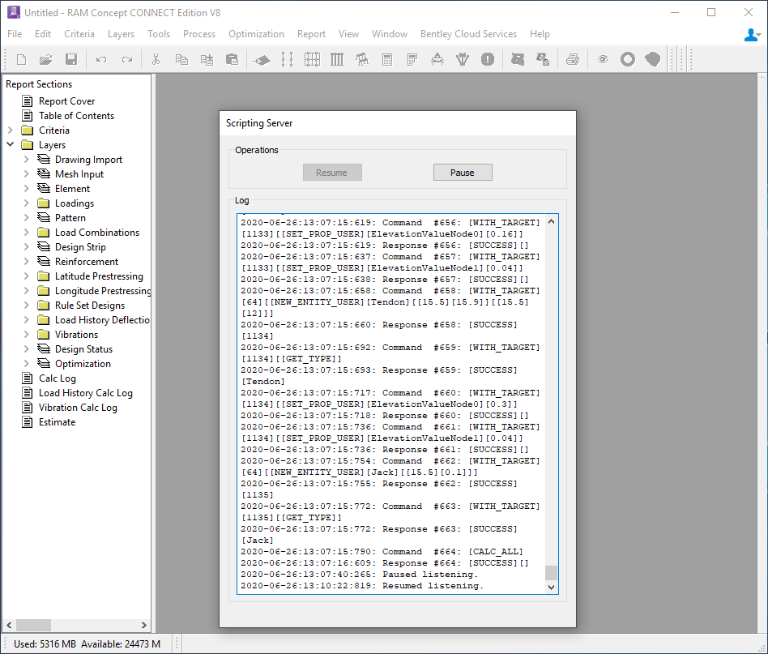

Starting Coding¶
Prerequisites¶
If you haven’t already, install the API using these instructions: Installing the API
It is assumed that you have a development tool available for writing scripts:
We recommend Visual Studio Code (it’s free and high quality): https://code.visualstudio.com/download
These instructions show how to set up Visual Studio Code for Python: https://code.visualstudio.com/docs/languages/python
Your First Script¶
Try coding and running this script. Does it work in your development setup?:
from ram_concept.concept import Concept
concept = Concept.start_concept(headless=True)
response = concept.ping()
print("RAM Concept responded: " + response)
concept.shut_down()
A More Realistic Script¶
If the previous tiny script is working. Take a look at the walkthrough example installed in the python\examples\walkthrough folder. That example will lead you by the hand through all the coding you need to do to create and analyze a real structure through the API.
Run the walkthrough example as-is to re-verify your development setup is working.
Copy the walkthrough example, and start experimenting….
You may want to use the walkthrough sample as a starting point for all of your scripting projects.
Debugging Your Scripts¶
Your development environment will provide tools to debug your scripts; the RAM Concept API provides one additional tool that can help: running scripts with RAM Concept open. To use this tool start the RAM Concept process with:
concept = Concept.start_concept(headless=False)
This will cause a visible RAM Concept process to be created; one with a Scripting Server window as shown below:
The Scripting Server window is mostly self-explanatory:
The main pane shows the commands that are sent to RAM Concept and the responses RAM Concept provides.
The Pause button causes the Scripting Server to pause serving the API (after the completion of any running command).
The Resume button causes the Scripting Server to resume serving the API.
A common way to work when trying to debug scripts is:
Set a breakpoint in the script in your development environment.
When the breakpoint is hit (the script is stopped), go to the RAM Concept window.
Click on the Pause button.
Use RAM Concept’s normal features to investigate the state of the RAM Concept model.
Click on the Resume button.
Continue the script (past the breakpoint) in your development environment.
One word of caution: if the script tries to shut down RAM Concept, it will succeed.